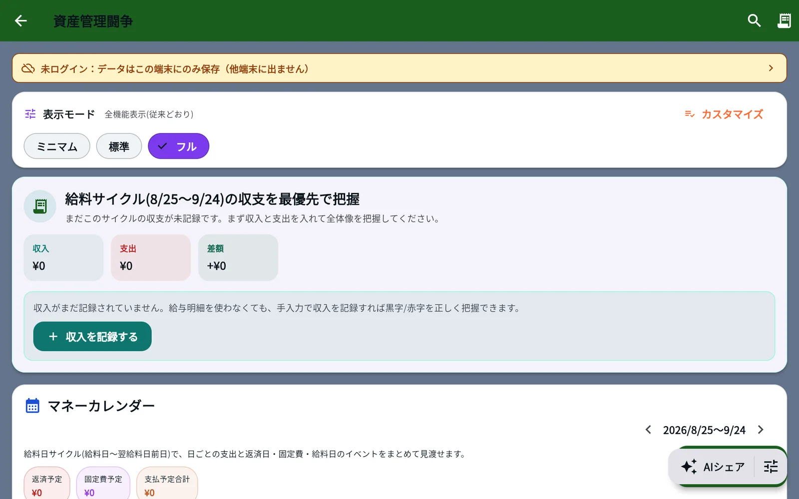

このUIがしていること
確認できた範囲は、分類の機能が置かれているとされるアプリの外枠である。分類そのものの画面は、確かめられていない。
- アプリは、未ログインではデータが端末にだけ保存されると、最初に明示している。家計という私的なデータを扱う画面として、保存先を先に伝えている。
- 表示モードを3段階で切り替えられる。機能の多い画面を、利用者が絞れる。
- メモの分類が意図と違ったときに、利用者が費目を直せるか、直した結果が次の判断に生かされるかは、分からない。家計の記録では、誤った分類が集計に残るため、直す手段が要になる。
- 分類の確からしさを利用者に見せているかどうかも、分からない。
キャプチャ
{kind=link}

（原寸の画像を開く）見る箇所上端の「未ログイン：データはこの端末にのみ保存（他端末に出ません）」、表示モード（ミニマム・標準・フル）、収入・支出・差額、「収入を記録する」。経費メモの分類は、この画面には出ていない
入力から画面の変化まで
-
判断への入力
要約によれば、日本語で書いた曖昧な支出のメモ。取得した画面には、メモの入力欄が出ていない。
-
Jevの判断
作者の投稿と要約によれば、メモを決まった費目に、ミリ秒単位で分類する。費目の候補、確率は確かめていない。
-
結果がUIをどう変えるか
要約によれば、分類の結果が、資産管理の画面にその場で反映される。取得した画面で確認できたのは、資産管理のページの初期状態（収支が0円で、記録を促す案内）だけである。
- 判断型の見立て
- 不明出典から判断できない
- 費目の候補から選ぶ判断のように読めるが、分類の画面も投稿の画像も確認していない。取得した画面にJevの表記はない。
Jevとの適合
短いメモを、決まった費目の1つに素早く当てはめる判断は、入力のたびに待たせない点でJevに合う。ただし、受信箱や文書の分類の事例と近く、この事例に固有の工夫は確かめられていない。
確認範囲と未確認事項
根拠は限定的で、調査監査の評価はB（追加の確認が要る段階）。日本語の作者による投稿が根拠だが、投稿の画像は調査でも取得・確認されていない。公開サイトは開けるが、掲載した画面は未ログインで開いた直後の状態で、メモの入力欄も分類の結果も写っていない。取得した画面にJevの表記はない。分類の動作は、検索結果の要約と作者の投稿によるもので、確かめていない。
- 確認済み2026-09-21に取得した公開サイトの初期画面（未ログインの案内、表示モード、収入・支出・差額、記録を促す案内）。ページが開けること
- 未検証経費メモの入力と分類の画面、Jevの利用（画面に表記がなく、作者の投稿による）、費目の候補と確率、誤った分類の直し方、分類の速度と精度、投稿の画像、ソースコード
- 推定扱い質問型は不明として扱う。費目の候補から1つを選ぶ判断のように見えるが、画面でも投稿の画像でも確かめていない
- 引用公開サイト画面を2026-09-21に必要範囲で取得。権利は作者に帰属する